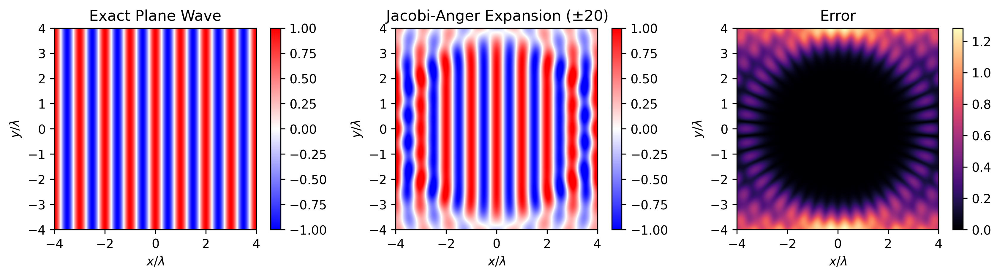

Code
import numpy as np
import matplotlib.pyplot as plt
import scipy.special as sps
import scipy.integrate as spi
lm = 1.0
k = 2.0*np.pi/lm
lim = 4.0*lm
xv,yv = lim*np.linspace(-1,1,500), lim*np.linspace(-1,1,500)
X,Y = np.meshgrid(xv,yv)
def plane_wave(x,y):
r = np.sqrt(x**2 + y**2)
return np.exp(1j*k*x)
def expansion(x,y):
Nmax = 20
approx = np.zeros_like(x, dtype=complex)
z = x+1j*y
r = np.abs(z)
theta = np.angle(z)
for n in np.arange(-Nmax, Nmax+1):
approx += (1j)**n * sps.jv(n, k*r) * np.exp(1j*n*theta)
return approx
exact = plane_wave(X,Y)
approx = expansion(X,Y)
error = np.abs(exact - approx)
fig, axs = plt.subplots(1,3,dpi=150, figsize=(14,3))
im0 = axs[0].imshow(np.real(exact), origin="lower", extent=(-lim, lim, -lim, lim), vmin=-1, vmax=1, cmap="bwr")
fig.colorbar(im0, ax=axs[0])
axs[0].set_title("Exact Plane Wave")
im1 = axs[1].imshow(np.real(approx), origin="lower", extent=(-lim, lim, -lim, lim), vmin=-1, vmax=1, cmap="bwr")
fig.colorbar(im1, ax=axs[1])
axs[1].set_title("Jacobi-Anger Expansion ($\\pm20$)")
im2 = axs[2].imshow(error, origin="lower", extent=(-lim, lim, -lim, lim), cmap="magma")
fig.colorbar(im2, ax=axs[2])
axs[2].set_title("Error")
for ax in axs:
ax.set_xlabel("$x/\\lambda$")
ax.set_ylabel("$y/\\lambda$")
plt.show()